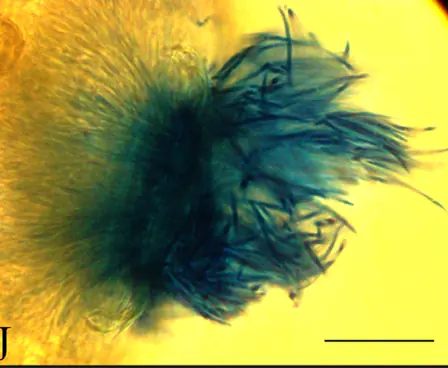
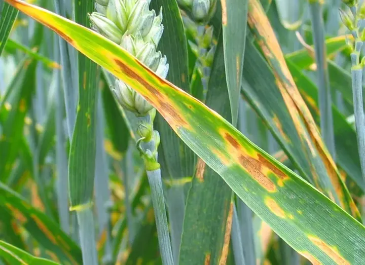

Збудник

Уражена рослинаПікніда Z. tritici, з якої виходять пікноспори, у листку сприйнятливого сорту пшениці на 21-шу добу після зараження. Світлова мікроскопія, шкала — 20 мкм.
1. Септоріоз листя пшениці
Zymoseptoria tritici
Одна з найшкодочинніших листкових хвороб озимої пшениці в Україні, особливо у вологі роки. Гриб проникає в листок через продихи й тривалий час (2–3 тижні) розвивається безсимптомно, після чого спричиняє некроз тканин. Пікноспори поширюються краплями дощу знизу вгору по ярусах листя.
Прояви
- Восени й навесні на нижніх листках — хлоротичні, згодом світло-бурі видовжені плями, обмежені жилками.
- У некротичних плямах — чорні крапки пікнід, розміщені рядами вздовж жилок (добре видно в лупу проти світла).
- Хвороба піднімається ярусами вгору; за сильного ураження засихає прапорцевий листок.
Розвиток хвороби
Зимує міцелієм і пікнідами в листі озимих сходів та на рослинних рештках; восени вітер розносить аскоспори статевої стадії. Для зараження потрібне зволоження листка понад 20 год за 15–25 °C. Прихований період — 2–4 тижні, тому симптоми видно вже після зараження верхніх листків.
Шкодочинність
Скорочує площу верхніх листків, які дають основну частину асимілятів для наливу зерна; знижує масу 1000 зерен. У роки епіфітотій втрати врожаю сягають 20–40 %.
Мікрофото: PLOS ONE, 2024 · CC BY 4.0Фото: Maccheek, Wikimedia Commons · суспільне надбання